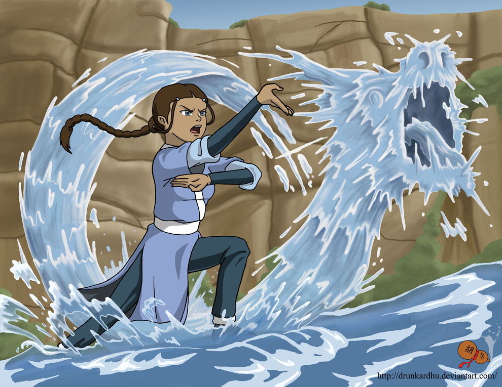
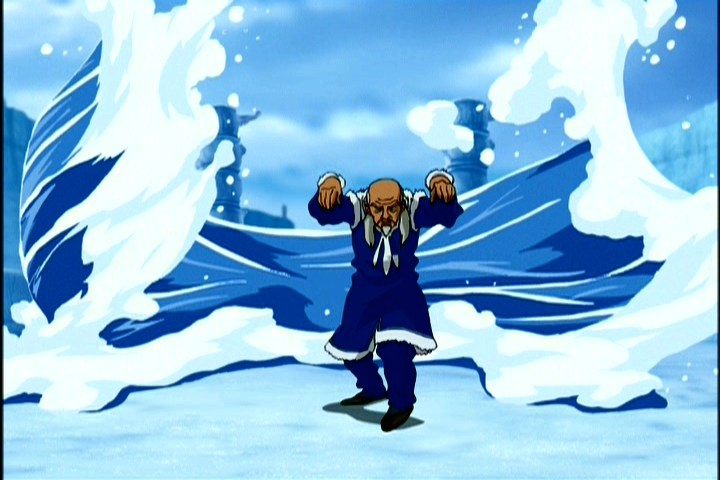
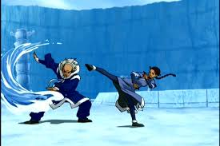

"Water is the element of change."
Water is the element of change.The moon is the source of power in waterbending, and the original waterbenders learned to bend by observing how the moon pushed and pulled the tides. The Water Tribes are the only people who did not learn bending from an animal, though the Moon and Ocean Spirits took the form of koi fish in the mortal world near the beginning of the Avatar World.
The fighting style of waterbending is mostly fluid and graceful, acting in concert with the environment. Foggy Swamp style waterbending, however, is more rigid and straight. Waterbenders deal with the flow of energy; they let their defense become their offense, turning their opponents' own forces against them. Even when waterbenders do take an attack stance, their moves always appear to flow from one to the other.
Waterbending's strength is its great versatility. Rather than supporting a separate set of offensive methods, waterbending employs defensive techniques that can be transformed into attacks and counters - defense into offense. Instead of simply deflecting an attack, waterbending's defensive maneuvers focus on control, achieved through turning an opponent's own strength against them, rather than directly harming the opponent.
